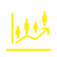

점선 상자마다 넣을 위치와 파일을 적었습니다. 오른쪽 위 토글로 화이트 모드에서도 확인해 보세요. 마음에 드는 번호를 알려 주시면 그것만 home.html에 적용합니다.
티커 얼굴을 단순화한 동그란 마크. 파비콘으로도 쓸 수 있습니다.
새로 생성 · logo-ticker.svg지금은 글자만 있는 카드에 골드 선 아이콘을 얹습니다. 카드 hover 골드 테두리와 색이 맞습니다.
새로 생성 · icon-biz / tax / home / market / benefit / save .svg우리가 매일 돈 내는 가게, 그 돈은 누구 손에 얼마 갈까?
연말정산, 재산세, ISA.
보금자리론, 전세 계약, 카드 빚.

코스피, 환율, ETF, 금.
근로장려금, 청년 적금, 실업급여.
보험료, 통신 요금, 교통비.
화 · 목 · 토 · 일 업로드.
3D 렌더 사진이라 SVG로 바꾸면 사진을 SVG 안에 그대로 감싸기만 됩니다(용량·화질 이득 없음). 바꾸길 원하시면 감싼 SVG로 만들어 드릴 수 있습니다. 기존 img/의 visual·profile·project 사진은 회의실 스톡 사진이라 이 사이트 내용과 맞지 않아 추천하지 않습니다.
기존 이미지 · ticker-hero.jpeg